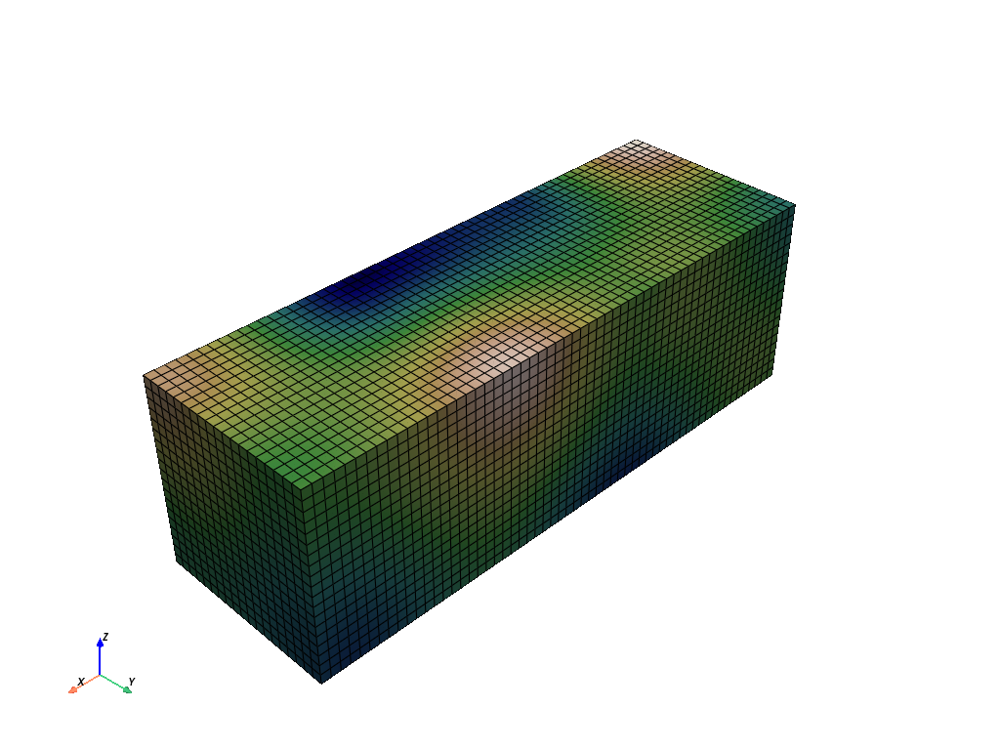
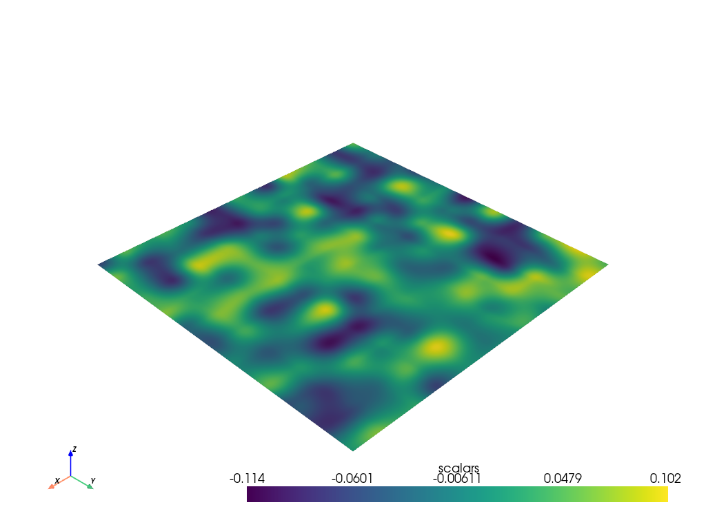

pyvista.core.utilities.features.sample_function#
- sample_function(function: ~vtkmodules.vtkCommonDataModel.vtkImplicitFunction, bounds: ~typing.Sequence[float] = (-1.0, 1.0, -1.0, 1.0, -1.0, 1.0), dim: ~typing.Sequence[int] = (50, 50, 50), compute_normals: bool = False, output_type: ~numpy.dtype = <class 'numpy.float64'>, capping: bool = False, cap_value: float = 1.7976931348623157e+308, scalar_arr_name: str = 'scalars', normal_arr_name: str = 'normals', progress_bar: bool = False)[ソース]#
構造化された点セット上の陰関数をサンプルします．
vtk.vtkSampleFunctionを使用します．このメソッドは，
vtk.vtkStructuredPoints内の各点で陰関数と法線を評価します．ユーザは，サンプリングの次元と空間上の位置を指定することができます．閉曲面を作成するために（vtkContourFilterと組み合わせて），キャッピングをオンにしてサンプル空間の境界に特定の値を設定することができます．
- パラメータ:
- function
vtk.vtkImplicitFunction 評価する暗黙の関数． 例えば，
perlin_noise()から生成される関数がこれにあたります．- boundssequence[
float], default: (-1.0, 1.0, -1.0, 1.0, -1.0, 1.0) 以下の形式で境界を指定します．
(xmin, xmax, ymin, ymax, zmin, zmax).
- dimsequence[
float], default: (50, 50, 50) (xdim, ydim, zdim)のフォーマットで表される，サンプリングするデータの次元．- compute_normalsbool, default:
False 法線の計算を有効または無効にします．
- output_type
numpy.dtype, default:numpy.double 出力スカラー型を設定します．以下のいずれかを指定します．
np.float64np.float32np.int64np.uint64np.int32np.uint32np.int16np.uint16np.int8np.uint8
- cappingbool, default:
False キャッピングの有効・無効を設定します．キャッピングが有効な場合，構造化ポイントセットの外側の境界はキャップ値に設定されます．これは，サーフェスが閉じていることを確認するために使用することができます．
- cap_value
float, default:sys.float_info.max cappingパラメータで使用されるキャッピング値．- scalar_arr_name
str, default: "scalars" このデータセットのスカラー配列の名前を設定します．
- normal_arr_name
str, default: "normals" このデータセットの法線配列の名前を設定します．
- progress_barbool, default:
False 進行状況を示す進行状況バーを表示します．
- function
- 戻り値:
pyvista.ImageDataサンプリングされたデータによる一様なグリッド．
例
構造格子上のパーリンノイズを3Dでサンプルします．
>>> import pyvista >>> noise = pyvista.perlin_noise(0.1, (1, 1, 1), (0, 0, 0)) >>> grid = pyvista.sample_function( ... noise, [0, 3.0, -0, 1.0, 0, 1.0], dim=(60, 20, 20) ... ) >>> grid.plot( ... cmap='gist_earth_r', show_scalar_bar=False, show_edges=True ... )
 パーリンノイズを2Dでサンプリングし，プロットします．
>>> noise = pyvista.perlin_noise(0.1, (5, 5, 5), (0, 0, 0)) >>> surf = pyvista.sample_function(noise, dim=(200, 200, 1)) >>> surf.plot()
 この関数を使用した完全な例については， サンプル関数:2DでのPerlinノイズ を参照してください．